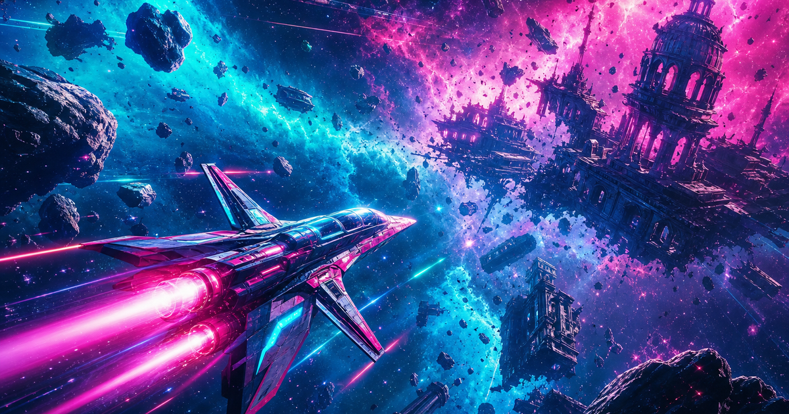

Debris Lanes · Arcade shooter
Neon Drift
Void pilots race through four independent game worlds's cosmic debris — palace wreckage and war frigates spinning in cyan and magenta void. A free arcade shooter roguelike built for the one-more-run obsession.

Storyline
When the empire shattered, not everyone fell to the hex marches. Fleets were flung into the sky-rivers between fragments — endless fields of wreckage glowing with leftover Seal radiation. The nobles called it tragedy. The pilots called it home.
In Neon Drift, you are a void pilot who refused to walk on land again. You weave a neon corvette through asteroid cathedrals and frigate ribs, chasing combos and power-ups while waves escalate toward impossible density. Permadeath is not punishment; it is proof you lived fast enough to matter.
Legends speak of a vault-ship at the lane's heart holding the emperor's astrolabe. Every run is another bearing toward that hum — or another beautiful failure painted across the void.
Features
Arcade shooter purity with roguelike stakes.
Endless debris fields
Procedural asteroid waves inspired by the standalone game's cosmic wreckage.
Combo scoring
Chain destroys for multiplier scores and leaderboard bragging rights.
Power-ups
Collect upgrades from wreckage — speed, fire rate, shields, and more.
Permadeath runs
One life per drift. Death sends you back hungrier for the next launch.
Unlockable ships
Earn new hull colors and trails by hitting score milestones.
Pygame performance
Smooth 60fps arcade action on PC with minimal dependencies.
Frequently asked questions
What platforms are supported?
PC via Python and Pygame on Windows, macOS, and Linux. Run npm run pc or ./scripts/dev.sh pc from the repo root.
Is this an arcade shooter?
Yes — escalating waves, combos, power-ups, and permadeath define a classic arcade shooter roguelike loop.
How does lore connect to other games?
Debris lanes float above the same shards where Realm Conquest lords fight and Shadow Strike assassins delve below.
Play to earn?
Submit high scores to Realm GameFi on Optimism to mint REALM rewards across the portfolio.